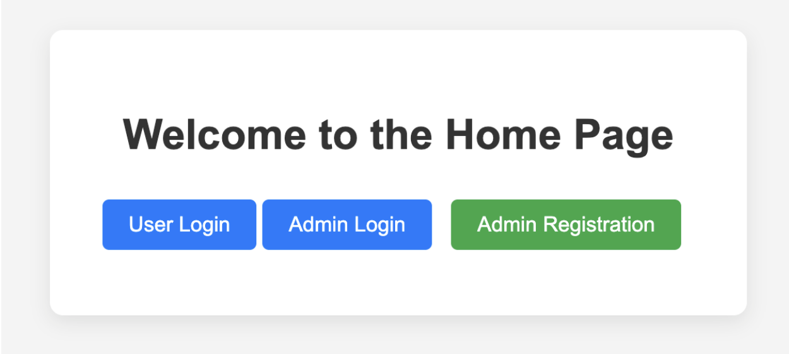
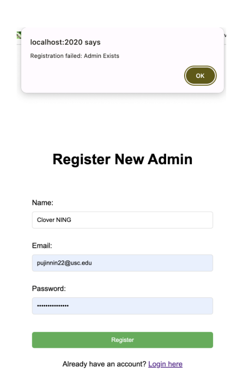

Distributed Database School Management System
Introduction
This project is a educational management system designed to facilitate the administration of academic operations. Developed using Node.js and Express, and leveraging MongoDB for database operations, the system supports a broad spectrum of functionalities. These include CRUD operations for managing students, instructors, and administrators and advanced features like user authentication, session management, and dynamic database connections. The architecture is modular, promoting scalability and maintainability. It also includes robust error-handling mechanisms, ensuring the system operates efficiently and securely under concurrent user interactions. This setup provides a reliable and robust platform for managing educational processes.
Planned Implementation
-
Distributed database:
-
Database manager user interface:
-
Web-based user interface
We would implement effective load balancing to distribute queries evenly across the database. We will utilize NoSQL (MongoDB) to store the data and perform standard database operations such as inserting, deleting, and updating the data in the distributed database. We will create mock data to store in the MongoDB database. We will utilize NodeJs to configure the server environment where the system's backend will run. We will connect NodeJs with MongoDB to efficiently handle large volumes of unstructured data in the distributed database.
We will implement an intuitive user interface using HTML, CSS, and Javascript. We will also create a dashboard for adequate visualization of the data. The database manager interface will provide the operations to store, retrieve, and manage the data effectively. The database manager would have full access to the database. The database manager would have seamless integration between frontend and backend using ExpressJs.
Create a user-friendly interface for the end users to view the data from the database. They would not have the authority to change or modify the database. We will implement additional features like user authentication and data retrieval. We will hide the system's complexity from the end user, ensuring smooth interaction with the database. We would also provide the web is accessible and the interface is responsive on various devices.
Architecture Design

Web browsers serve as the beginning point for user interactions. It performs requests to the server
(usually for web pages or APIs) and displays the replies. It might be any device with a web browser
connecting to the server over the internet. The server serves as the central receiving point for all
client requests. It handles these requests effectively with Express, a Node.js framework. The server
manages the routing of requests to the relevant handlers or controllers. The middleware components
include isLogin and Token Management. The isLogin middleware determines whether a user's request
contains a valid authentication token. The request will be sent to the appropriate controller if the
token is valid. It may prompt the user to log in or return an error if not.
The Token Management functions are used to create and verify tokens. This involves establishing new
tokens when users log in and checking tokens in every request that requires authentication.
The admin controller contains the business logic for various administrative activities, including
creating, updating, removing, and retrieving admin profiles. Controllers interpret user inputs and
translate them into model actions. It gets processed requests from the middleware, interacts with the
database using models to retrieve or alter data, and returns the response to the server, providing it to
the client. The models (Admin, Instructor) specify the data structure and manage database activities
that directly affect the Admin and Instructor data. This comprises searching the database, inserting and
updating records, and removing entries. The database stores all the data concerning admins, instructors,
and other entities like courses or departments. It responds to queries initiated by models and returns
data to them. Database interaction refers to the methods and logic used to interface with a database,
including connection management, transaction processing, and query optimization. This is typically
encased within the models but may also include direct database management operations performed by the
server or database middleware.
Functionalities
The school management system application is built upon various technological tools and frameworks. The system is designed to store and manage the data in distributed databases. This allows for effective scaling and load balancing.
-
User Authentication and Authorization:
-
Database Connection and Distribution:
-
Password Handling:
JSON Web Tokes (JWT) are implemented in the project to authenticate the user and provide robust authentication. The 'generateToken.js' and 'verifyToken.js' modules handle token creation and verification, ensuring secure user sessions. The authentication process generates a token upon login and verifies the token with each request to secure routes that require user authentication. When the token is valid, the admin's data from the database is attached to the request object. When the user does not enter the correct password, an "Invalid password" message is generated. Therefore, not allowing unauthenticated users to enter the system. The 'adminRouter.js' manages all routes related to admin actions, including endpoints for registering, logging in, updating, and deleting admin accounts. The user provides their credentials, i.e., email and password, from the login form. The user details are verified to verify that they are already registered in the system.
MongoDB is used as a database where the data related to the system is stored. The admin email is used as a primary key. The hash function is used to distribute the data among 3 databases. This hash function basically adds the ASCII values of each character in the email, and the total sum is then modulo divided by the number of databases, which is 3 in our case. The data is then stored according to the hash value that is generated from the hash function mentioned in the respective database. 'dsci551-0', 'dsci551-1', and 'dsci551-2' are the names of the databases in the MongoDB where the data is distributed. The system captures and displays database connection errors, which are used to verify the issues and address them promptly. The security of the database transaction is also enhanced by authenticating the user and allowing it to connect to the database to perform any operations. The modular approach to the database connections also makes it easier to maintain and update the connection logic as needed without impacting other parts of the system. This distributed approach allows the system to scale horizontally by adding more database instances as needed. Each instance can be optimized for a subset of users, distributing the load and reducing bottlenecks. The system is capable of handling increases in user numbers and data volume without significant reconfiguration, making it highly scalable and adaptable to changing loads. The hashing ensures that it handles all transactions related to a single user using the same database instance.
Whenever the admin registers or updates the password, the password is hashed using 'bcryptjs' before it is stored in the distributed databases. It generates a random value and combines it wi the password to produce a unique hash value. This process is known as salting, ensuring that even identical passwords will result in different hashes. Whenever the user tries to log in, the password is verified with the stored hash value. If a user wishes to change their password, the new password is hashed using the same process before replacing the old hash in the database.
Tech Stack
-
Node.js:
-
Express.js:
-
Mongoose:
-
bcryptjs:
-
MongoDB:
-
EJS (Embedded JavaScript templates):
-
CSS:
-
Nodemon:
-
Morgan:
-
npm:
In the server-side architecture, we have used node.js. It is used to establish the connection with the server and manage the communication between the front and the backend. It sets up the HTTP server and manages the web traffic on the ports. It also integrates with Express.js to manage the routing and the middleware. It also introduces robust error-handling mechanisms, improving the reliability and maintainability of the application.
It runs on top of node.js and provides a strong foundation for the features used to streamline the server setup and API development. In our project, it is used for effective route management, which is used to manage the endpoints of the HTTP requests. It also seamlessly integrates with the middleware and allows the request-response cycle to include features like body parsing, session management, etc. It is also used in our project to generate HTML from templates. It helps to deliver dynamic content that changes based on the state of the application.
With the help of the Mongoose, we define the database structure in our project. We can collect the required fields, default values, etc, and maintain data integrity and consistency across the application. It also helps in ensuring that only valid data is stored in the database. We have also implemented password hashing and verification in the Admin schema. In distributed environments, we use Mongoose to distribute the data among the databases. Integrating Mongoose into our application enhanced data handling capabilities, ensuring robust, scalable, and maintainable database interactions that are crucial for the application's backend logic and overall performance.
It is utilized as a security tool for hashing and securing user passwords. bcryptjs provides a reliable way to hash passwords before they are stored in the database. This process involves transforming the plain text passwords into a secure string that is difficult to reverse-engineer. In your project, the Admin.js schema uses bcryptjs to automatically hash passwords whenever a new admin record is saved or an existing password is updated. To further enhance security, crypts add salt to each password. Salting is a technique where a random value is added to the password before it is hashed. This ensures that even identical passwords will result in different hash values, thereby protecting against rainbow table attacks.
MongoDB database, which is a NoSQL database, is used to store the data in the database. We have stored different data types in our project. MongoDB provides high performance for both reads and writes. It is utilized for faster data retrieval and effective query processing. We have developed the hash function, which distributes the data among one of the three MongoDB databases. It aids in managing database connections based on partition keys, thus optimizing performance as data grows.
EJS allows your server to send dynamic content to the client by embedding JavaScript directly into HTML templates. In our project, pages like login.ejs, register.ejs, and index.ejs can display user-specific information, error messages, or other dynamic data directly from the server. This makes it easier to develop and maintain templates, especially when dealing with complex logic that depends on user data or other dynamic sources.
In our project, we used CSS to style the web pages. This includes setting colors, fonts, margins, and other visual elements. The CSS file is a crucial component in defining how our web application interacts visually with the users, making it an essential asset for frontend development and design.
In our project, we have used a nodemon to enhance the efficiency of the development process. Whenever we make changes to the files stored in the project folder, Nodemon automatically restarts the Node.js application. This saves our time and effort as we don't have to manually start the server whenever we make some changes to the files.
Morgan is specifically used in our project to log HTTP request details, which is essential for monitoring the server's activity and debugging issues. During the development process, Morgan helps us to see the requests as they come in, how the server responds, and how long it takes to send a response. This instant feedback allows developers to quickly identify misconfigured routes or performance bottlenecks.
Npm manages all the dependencies listed in our package.json file. It handles the installation, upgrading, and removal of packages such as Express, Mongoose, bcryptjs, dotenv, jsonwebtoken, and many others that provide essential functionalities within our application. This centralized management ensures that we have all necessary libraries in place, adhering to the specified versions to avoid compatibility issues.
Implementation Screenshots
-
Home page:
-
Admin Registration:
-
Admin Login:
-
User Login:
-
Update profile:
-
Delete profile:
The first page the user gets access to. There two login buttons for both normal user and administrator to enter the system. There is another portal for admin to register, and user can only be added by the administrator. 
Administrator can click on “Admin Registration” to start registration process starting with name,
email and password.

If the email address is duplicated, then the system will pop out a note about the failed registration.
administrator can click on “Admin Login” button to redirect to the admin login page, and use email
and password to retrieve account information. There is also a link for registration in case the
admin does not have an account.


normal user can click on “User Login” button to redirect to the user login page, and use email and password to retrieve account information.

Note: users are not allowed to change personal profiles. Only admins have the authorization to change personal information.


Learning Outcome
The project school management system is designed to streamline the administrative and academic management of educational institutions.
-
Full-stack Development Skills:
-
Database Management:
-
Modular Coding:
-
Error Handling:
Gained important knowledge of methods for server-side rendering. Learned how to modularize the HTML content using EJS partials, which greatly enhanced the codebase's maintainability. Developed abilities to handle anything from displaying user sessions to error messages and form data consistently across reloads when integrating EJS with Express.js to offer dynamic content. Developed proficiency with Embedded JavaScript Templating (EJS) for HTML page dynamic creation. Learned how to efficiently organize reusable webpage components using blocks, layout, and partials. Enhanced CSS styling abilities for the application's front end. Created responsive designs with the goal of offering the best possible viewing experience on a range of platforms, such as tablets, smartphones, and desktop computers. Become proficient with JavaScript on the client side to oversee browser-based interactions. Acquired the knowledge of utilizing AJAX to do asynchronous API requests, hence eliminating page reloads and enhancing user experience. Improved comprehension of REST principles and how to use them to create scalable, effective APIs. Understood how to use Express.js to manage CRUD operations securely and effectively. Gained experience in implementing and integrating middleware for various backend functionalities like authentication, error handling, and request logging. Advanced skills in MongoDB usage for handling complex queries, data aggregation, and schema design. Learned to optimize database interactions to improve performance and data integrity. Adopted Git for version control, which facilitated team collaboration by allowing multiple developers to work on different features simultaneously without conflict.
Gained knowledge of how to take advantage of MongoDB's schema-less feature, which enables the storing of documents without a predefined structure. Made decisions on when to use embedded documents versus citing other documents based on real-world experience. Created methods to manage intricate connections between elements, like students, instructors, classrooms, and tests. Learned the importance of data partitioning to distribute data across multiple databases to enhance performance and scalability. This approach is particularly useful in school management systems where data volume can grow significantly. Gained insights into hash-based distribution, which involves using a hash function to determine the partition in which data will be stored. This method helps in evenly distributing data across multiple nodes, avoiding hotspots, and ensuring efficient data retrieval. Developed a custom hash function for partitioning the database. Applied the hash value from the hash function to dynamically construct the MongoDB URI in the application. Enhanced understanding of managing database connections dynamically in a Node.js application using Mongoose. Studied how effective hash-based partitioning is in distributing load evenly across servers, which is vital for maintaining high availability and performance during peak usage times.
By dividing the application into three interconnected components—Models, Views, and Controllers—we were able to separate the data access, business logic, and user interface layers. This separation allowed us to manage complexities more effectively as the application scaled. Using MVC made it possible for several team members to work on distinct application components concurrently and without overlapping. For instance, one developer could work on the view templates, another on the controller logic, and a third on the database objects. The MVC architecture's modular design makes it simpler to modify to meet changing needs. It is possible to introduce new features without having to rewrite the current code, such as new interfaces or additional user roles. The implementation of MVC aided in the creation of a consistent coding style, which was especially helpful in preserving consistency throughout the codebase. It made sure that every developer adhered to the same architecture patterns, which greatly streamlined code reviews and maintenance.
Differentiate between various types of errors, such as programming errors (such as errors in code) and operational problems (such as invalid input, failed database action). Created a structured method to address these problems in a distinct way, making sure that operational failures are recorded and addressed while programming errors are identified and fixed right away. Express middleware was used to capture errors and convert them into organized answers. In order to improve the debugging process and user experience, a middleware function was created that detects problems, logs them for internal tracking, and formats them into a uniform JSON structure for API answers.
Challenges Faced
- Database Schema Design:
-
Testing and Validation:
Managing the relationships between many entities, including students, professors, classes, and academic terms, was the initial problem. The inflexible structure of traditional relational databases makes changes difficult as relationship complexity increases. Our initial schema iterations were not always scalable or easily modifiable due to the dynamic nature of school operations, where programs, courses, and faculty assignments can change on a regular basis. Managing user roles in the system, such as granting administrators and students differing access to features, added another layer of complexity. Schema design needed to be carefully considered in order to accommodate various variable interactions and maintain data integrity while handling diverse roles effectively. We used an iterative approach to schema design in order to overcome challenges, allowing us to progressively improve our models in response to application needs and interface input. With every iteration, we were able to comprehend and apply improved relationships between elements. We made use of MongoDB's features to impose role-based access at the database level in order to manage various user roles within the system. To improve the security and integrity of the system, we added custom validation rules to our schemas to make sure that every user activity was permitted and in line with their roles.
It was difficult to create test scenarios that addressed each of these factors without creating repetition. It was important to properly validate incoming data and handle errors graciously to avoid crashes and unhandled exceptions. At first, there was a lack of standardization in the error answers, which resulted in uneven error handling by the client. We decided to use both integration and unit tests. Individual functions and methods were validated using unit tests to make sure they operated as anticipated when used alone. In contrast, integration tests were made to examine how modules interacted with the database to make sure the system worked as a whole. In order to catch and format problems consistently, we implemented middleware in Express.js and standardized error responses across all API endpoints.
Conclusion
The School Database Management System project epitomizes the application of software engineering
principles and technologies to address educational management needs. Throughout the project, we
utilized a full-stack development approach, employing Node.js and Express for backend operations,
MongoDB for database management, and various other technologies to create a seamless and responsive
user experience. The system was built with a clear focus on user roles and data security,
implementing robust authentication mechanisms, dynamic database connections, and efficient CRUD
operations to ensure system integrity and performance.
The modular design and MVC architecture facilitated ease of development, maintenance, and future
enhancements. The implementation of distributed databases ensured scalability and efficient load
handling, showcasing the system’s capability to grow in line with user demands. Throughout the
project, continuous integration of feedback and iterative development were key to refining
functionalities and user interfaces.
This system demonstrates the significant impact digital solutions can have on educational
administration, providing a scalable, secure, and user-friendly platform. It supports complex
educational workflows and substantially enhances the operational efficiency of academic
institutions.
Future Scope
The future scope of the School Database Management System includes integrating AI and ML for predictive analytics, expanding modules for comprehensive educational management, and developing a mobile application to enhance accessibility. It also includes enhancing security features with advanced encryption and multi-factor authentication, adapting the system for international use, and transitioning to cloud-based deployment to improve scalability and maintenance. These enhancements will ensure the system remains adaptive, secure, and effective in meeting the evolving needs of educational institutions globally.